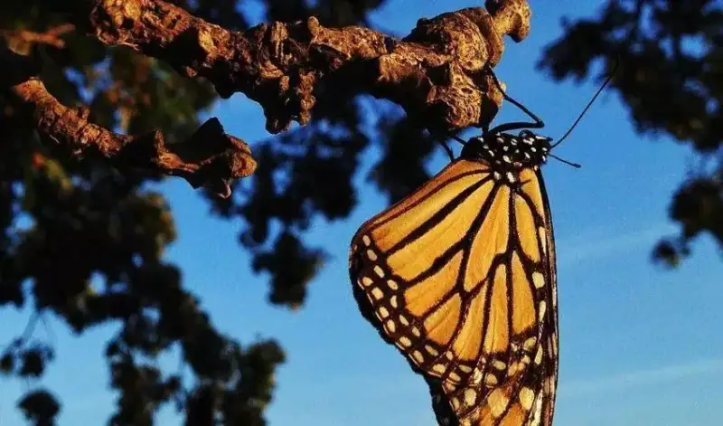
For artists who can find beauty, nature is a treasure chest of beauty.
Beauty is really in the ordinary, in everyday things that seem plain at first. Only people who watch and feel life well can draw that beauty out.
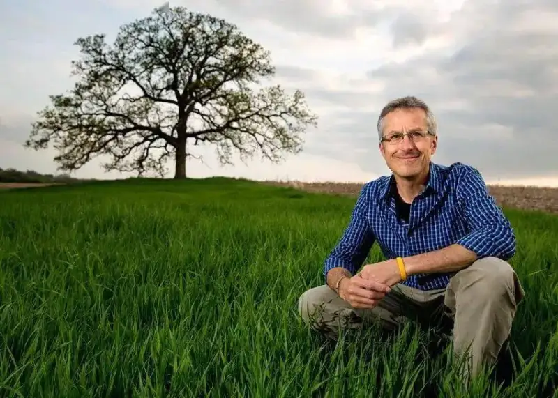
Mark Hirsch and his subject, a bur oak treeThe photographer from the United States, Mark Hirsch, used a phone to photograph the same bur oak tree every day.
The tree was like a stage. The photographer recorded its spring, summer, autumn, and winter, its blossoms and fall, and the quiet link between a person and a tree.
'I decided to spend a year photographing "That Tree" every day, before sunrise or after sunset, at any possible time. I would be there, waiting and watching quietly, paying attention to every small beauty that belonged to that tree.'
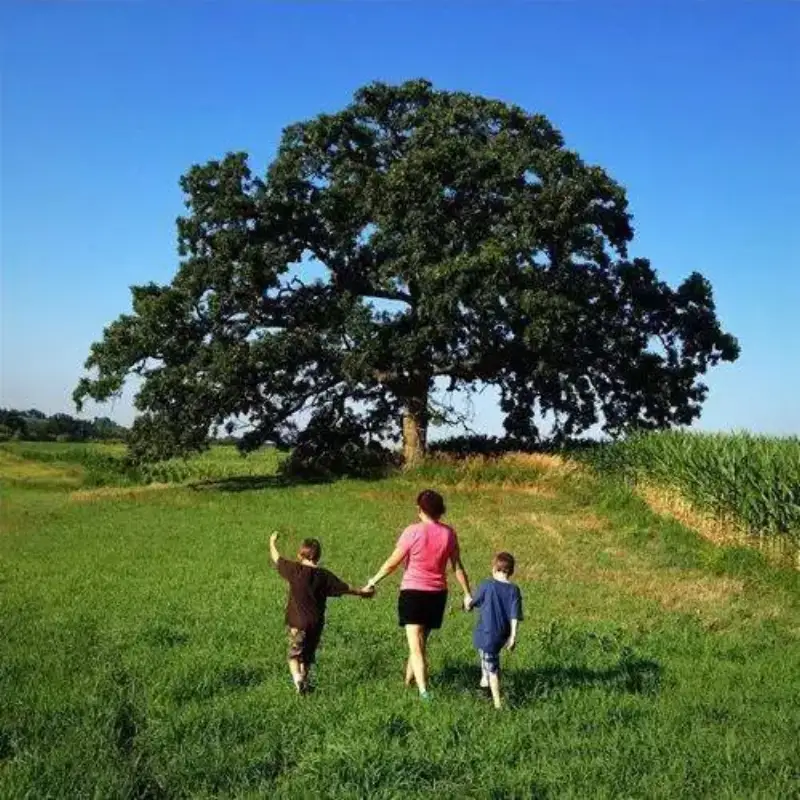
In January 2012, Mark Hirsch took the first photo of the bur oak. It is a large tree that grows about five miles from Platteville, Wisconsin. It stands alone in a cornfield.
Mark Hirsch set up a page on the social platform Facebook to share each day's photo. In March 2013, the project was complete, and he also published a photo book called 'That Tree.'
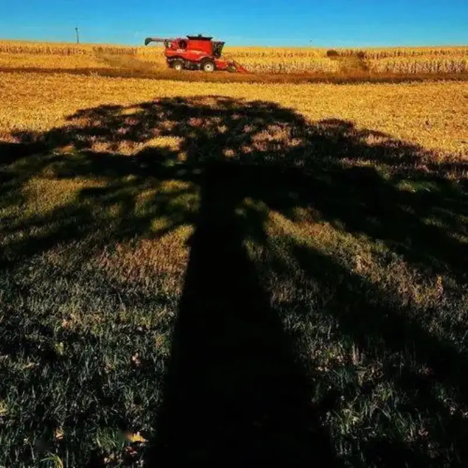
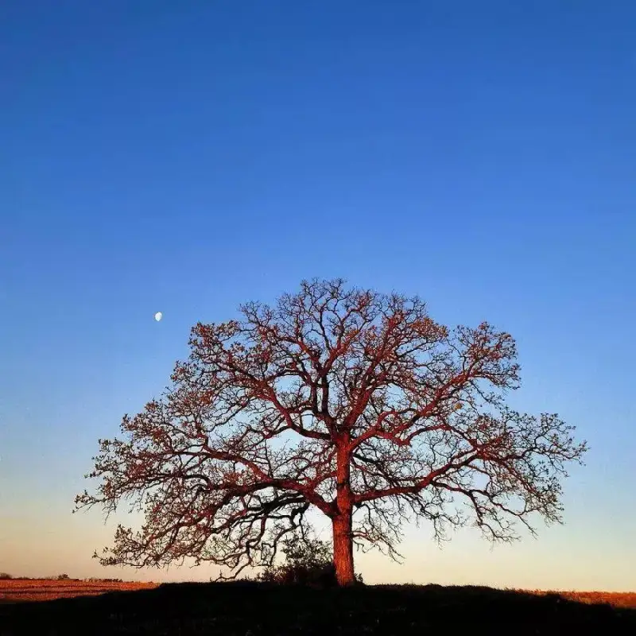
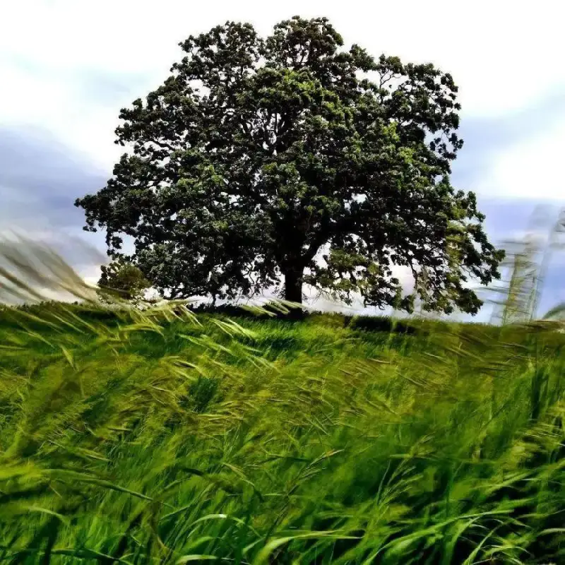
In fact, Mark Hirsch had 'known' the tree for a long time. He passed it every day on his commute, but he had never stopped to take it in.
Mark Hirsch worked in the newspaper industry for 20 years as a photojournalist and photo editor. His sudden layoff hit him hard, but it also made him rethink what life really means.
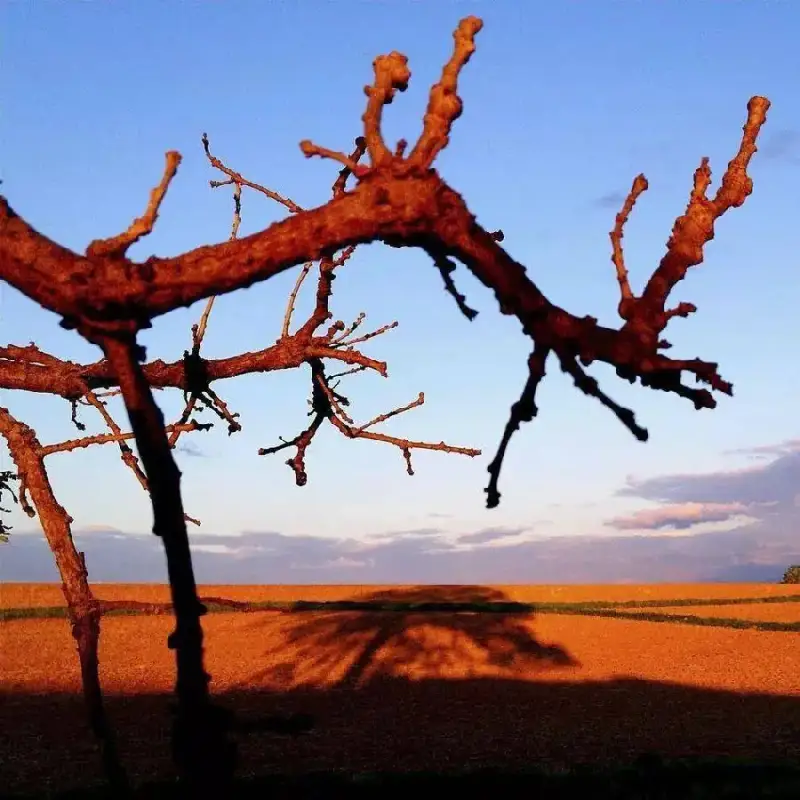
'This tree once healed me. I used to never slow down, but now I do. I have learned to look at a thing from different angles.'
Time and focus gave these photos their meaning. From these images we can feel the life and color of the tree. As the painter Van Gogh said, in trees I see expression, and even the soul.

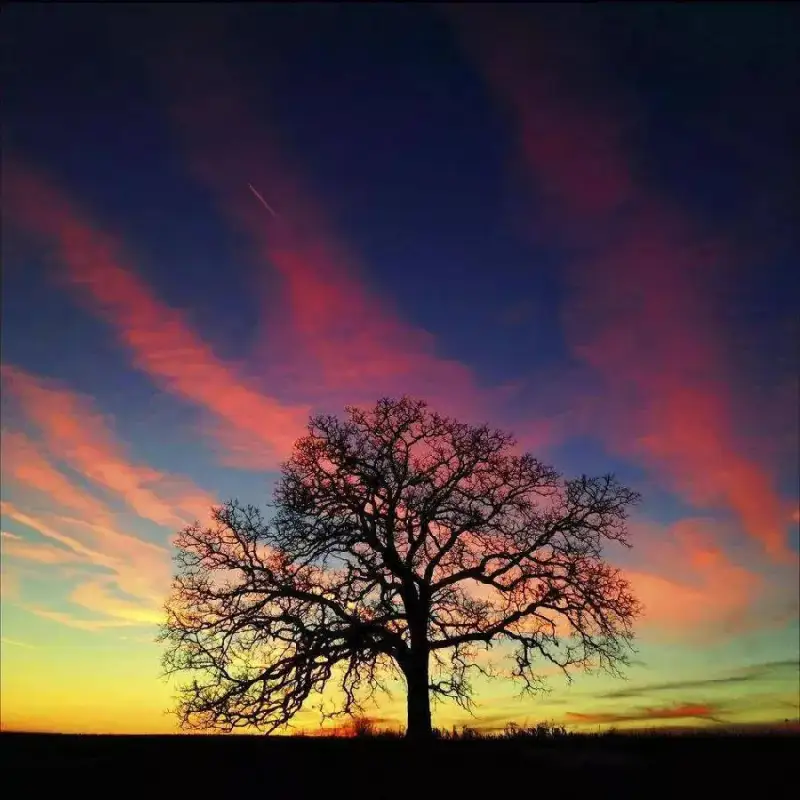
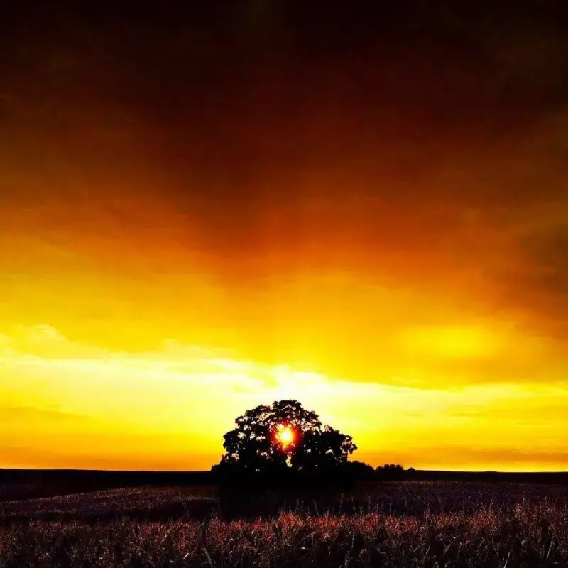
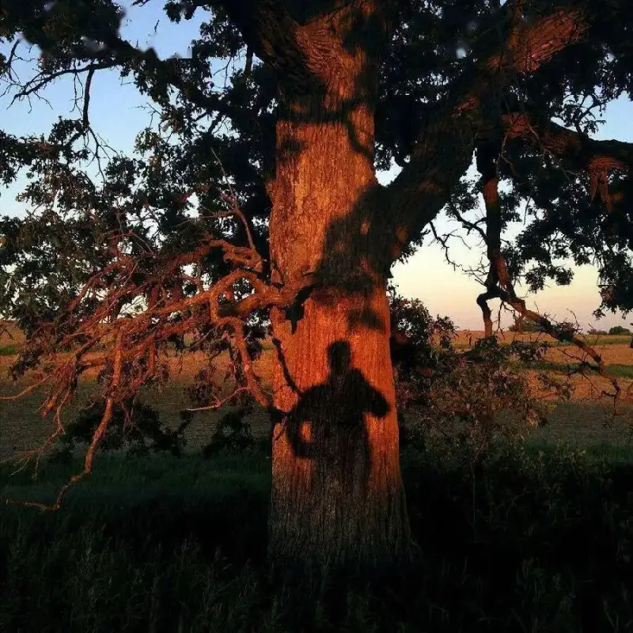
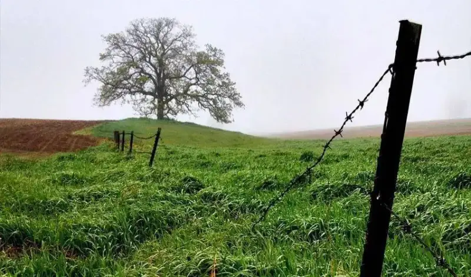
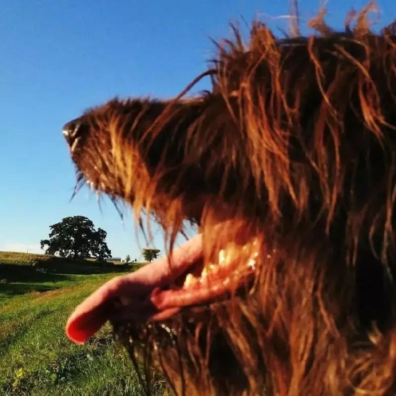
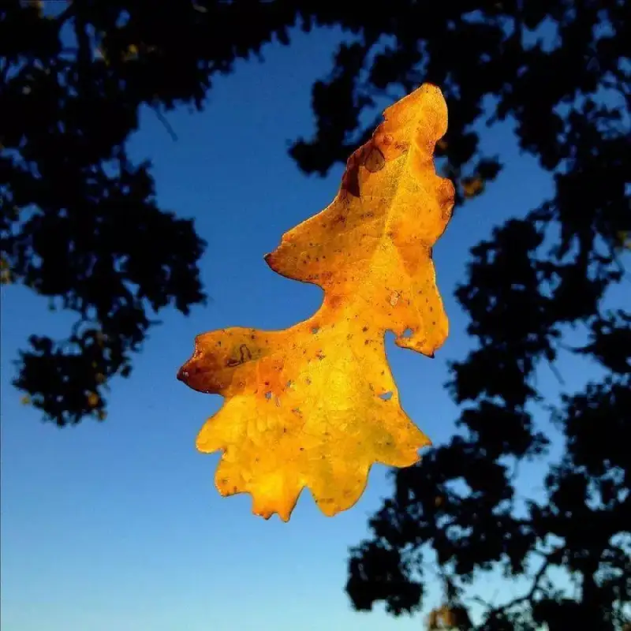
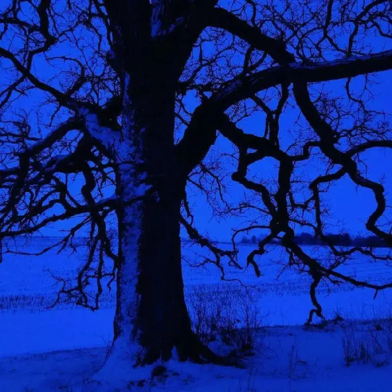
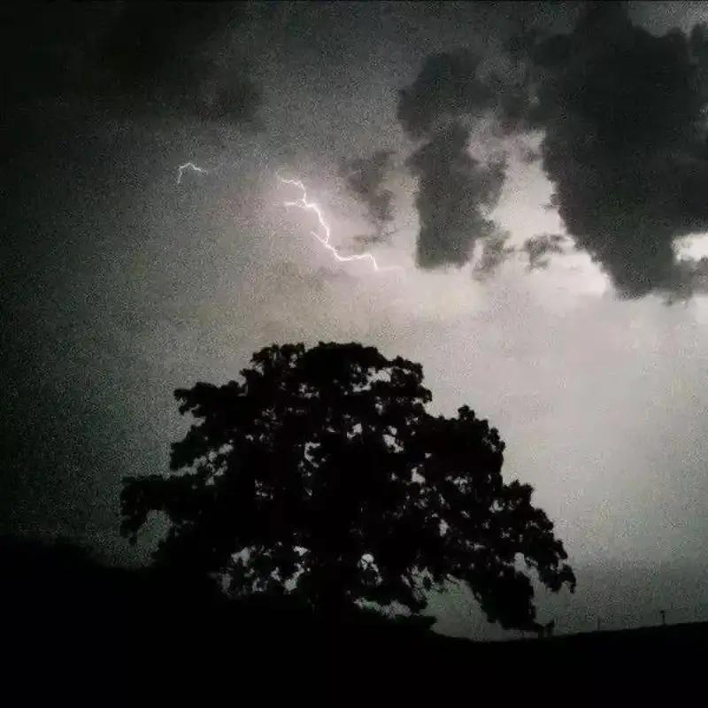
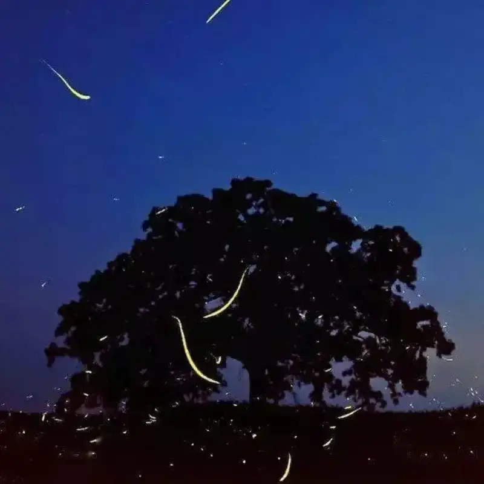